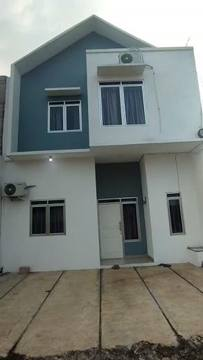
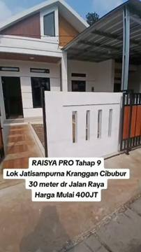
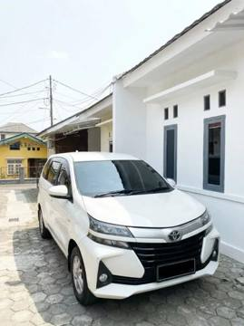
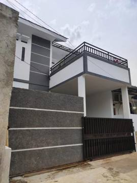
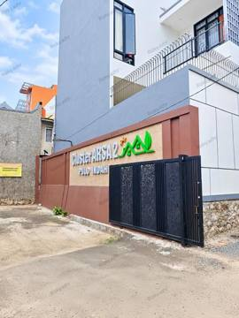
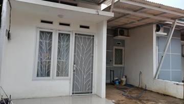
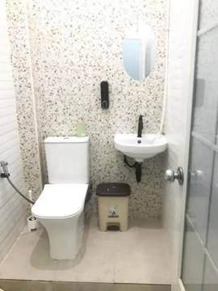
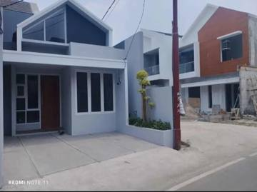

Shortlist rumah untuk disurvei
Diperbarui 27 November 2026 dari 4.991 rumah yang sudah terkumpul (rumah123, Pinhome, post Threads, dan catatan survei kami). Pembaruan ini menambah iklan rumah123 tiga hari terakhir dan 29 pesan DM baru, dan satu rumah baru lolos semua di Jatiasih (nomor 3). Iklan Pinhome masih dari 22 November. Ini bahan diskusi keluarga, bukan nasihat keuangan dan bukan penilaian properti resmi.
Intinya
Kalian mencoret dua rumah teratas (Kansa Residence dan Kemangsari) pada 18 November, lalu AS Cluster Jatisari (dulu nomor 15) pada 20 November karena bangunannya lama dan kamar tidurnya tinggal satu. Pada 22 November kalian mencoret Komplek Alastua di Semanan (dulu nomor 2) karena setelah disurvei lokasinya terlalu jauh, dan rumah Pondok Kelapa (dulu nomor 18) karena sudah terjual. Semua nomor di bawahnya naik. Nomor 1 tetap Cluster Prima Pedurenan 5 di Jatiluhur, Jatiasih (500 jt).
Dari 4.991 rumah, 18 lolos semua kriteria wajib tanpa ada yang masih belum jelas. 4 di antaranya ada di wilayah yang kalian sebut, semuanya di Kota Bekasi. Di Jakarta belum ada lagi. Sisanya di Kabupaten Bekasi, Depok, Bogor, dan Tangerang.
Tidak ada lagi rumah di bawah 400 jt yang lolos semua di wilayah kalian. Yang paling murah dan belum gugur adalah Lavender Crown IV (320 jt, nomor 13), Aldira 2 (350 jt, nomor 10), dan rumah di Jl. Sonton, Lenteng Agung (370 jt, nomor 17). Semuanya masih perlu dicek, terutama akses mobil dan carport.
Tiga rumah Jakarta yang kalian kirim 18 November (Cilangkap, Cipayung, dan Lenteng Agung) ada di nomor 15 sampai 17, lengkap dengan hitungan tol, banjir, dan sekolah. Rumah keempat, di Pondok Kelapa, sudah terjual.
Peta punya layer sekolah SD, SMP, dan SMA dengan tanda sekolah favorit. Klik rumah untuk melihat sekolah dalam radius 2 km. Tabel dan daftar di peta bisa diurutkan menurut harga, jarak ke Manggala Wanabakti, jarak ke sekolah paling favorit, atau waktu ke gerbang tol.
Tiga hal yang paling membatasi:
- Harga. 3.406 dari 4.991 rumah gugur di sini (3.023 di atas 500 jt tanpa cicilan tanpa bunga, 269 tanpa harga, 103 over kredit, 11 bukan harga rumah).
- Harus di dalam cluster atau komplek. Dari 1.585 rumah yang lolos harga, 695 gugur di sini. Di Jakarta kriteria ini yang paling keras: dari 163 rumah Jakarta yang lolos harga, 123 bukan di komplek.
- Lokasi iklan tidak tepat. Ini bukan kriteria, tetapi inilah yang membuat daftar pasti jadi pendek. Dari 468 rumah yang belum gugur, 400 titiknya hanya titik perkiraan, jadi banjir dan waktu tempuhnya belum bisa dipastikan.
Kriteria 25 menit ke gerbang tol ternyata tidak terlalu membatasi di Jakarta Timur dan Kota Bekasi, karena gerbang tol di sana rapat. Yang perlu kalian tahu: 25 menit ke gerbang bukan berarti dekat ke kantor. Dari rumah teratas yang sudah dicek di Google Maps (nomor 1, 2, dan 4), perjalanan sampai Manggala Wanabakti pada Senin pukul 06.30 butuh 65 sampai 80 menit. Nomor 3 belum dicek di Google Maps.
Kalau mau daftar yang lebih panjang, kriteria yang paling layak dilonggarkan adalah komplek untuk rumah di Jakarta (lihat bagian "Kriteria yang layak dilonggarkan").
Rumah yang lolos semua kriteria wajib
Urut dari waktu tempuh ke gerbang tol. Kalau sudah dicek di Google Maps, angka Google yang dipakai. "Model" adalah waktu OSRM dikali faktor macet pagi 2,4. "Google" adalah angka Google Maps untuk berangkat Senin 16 November 2026 pukul 06.30.
| No | Rumah | Harga | LT / LB | Gerbang tol arah Senayan | Ke gerbang (model / Google) | Sampai kantor (Google) | Badan tol terdekat |
|---|---|---|---|---|---|---|---|
| 1 |  Cluster Prima Pedurenan 5, Jatiluhur Cluster Prima Pedurenan 5, Jatiluhur | 500 jt (di atas 400 jt) | 89 / 49 | Jati Asih 2 (Lingkar Luar Jakarta) | 14 / 16 menit | sekitar 65 menit | 2,1 km |
| 2 | Pondok Indah Jatisari, Jatiasih | 500 jt di DM, 465 jt di rumah123 (di atas 400 jt) | 90 / 70 | Jati Asih 2 (Lingkar Luar Jakarta) | 16 / 18 menit | sekitar 70 menit | 2,9 km |
| 3 |  Griya Permata Jatisari, Jatiasih Griya Permata Jatisari, Jatiasih | 500 jt (di atas 400 jt) | 86 / 45 | Jati Asih 2 (Lingkar Luar Jakarta) | 19 menit / belum dicek | belum dicek | 3,3 km |
| 4 |  Dukuh Zamrud, Kota Legenda Dukuh Zamrud, Kota Legenda | 495 jt (di atas 400 jt) | 78 / 50 | Tambun (Jakarta-Cikampek) | 19 / 22 menit | sekitar 80 menit | 2,7 km |
1. Cluster Prima Pedurenan 5, Jatiluhur (500 jt)


- Harga 500 jt, dijual pemilik tanpa perantara. Di atas 400 jt.
- LT 89 / LB 49 menurut iklan ("aslinya lebih"). SHM.
- Lokasi: Jl. H. Dehir, Jatiluhur, Jatiasih. Titik dari tautan Google Maps yang dibagikan penjual, jadi ini yang paling tepat di antara lima.
- Tol: gerbang Jati Asih 2 di Lingkar Luar, 3,9 km. Model 14 menit, Google 16 menit.
- Banjir: di luar zona bahaya banjir BNPB. Sungai kecil terdekat 573 m, tanah rumah sekitar 6 m lebih tinggi. Catatan: "Perum Jatiluhur" di Jatiasih masuk daftar banjir BPBD Kota Bekasi pada Maret 2025 (150 cm). Saya tidak bisa memastikan seberapa jauh perumahan itu dari cluster ini.
- Carport: di foto ada carport berkanopi, jalan cluster berpaving.
- Badan tol terdekat 2,1 km.
- Bukan rumah baru dari developer.
- Iklan: https://www.threads.com/@afifsoegiharto/post/DftDolIGBOS (post 14 November 2026).
- Alasan: tanah paling luas kedua, lokasi paling pasti, dan masih ada sisa tanah untuk halaman.
- Cek saat survei: jarak ke Perum Jatiluhur yang pernah banjir, kondisi plafon (di satu foto terlihat rusak), dan luas tanah di sertifikat.
2. Pondok Indah Jatisari, Jatiasih (500 jt)
- Harga 500 jt di DM. Rumah yang sama (LT 90 / LB 70, satu pintu, carport) juga diiklankan agen lain di rumah123 seharga 465 jt, terlihat 25 November: https://www.rumah123.com/properti/bekasi-jati-asih/rumah-murah-siap-huni-dalam-komplek-di-jatisari-jatiasih-hos42449181/. Tetap di atas 400 jt.
- LT 90 / LB 70, satu lantai, 2 kamar tidur, 2 kamar mandi. SHM. Komplek satu pintu.
- Lokasi: Komplek Pondok Indah Jatisari, Jatiasih. Titik komplek dari Google Maps.
- Tol: gerbang Jati Asih 2 di Lingkar Luar, 4,9 km. Model 16 menit, Google 18 menit.
- Banjir: di luar zona bahaya banjir BNPB. Sungai kecil terdekat 618 m, tanah rumah sekitar 12 m lebih tinggi.
- Carport: iklan menulis carport 1 mobil.
- Badan tol terdekat 2,9 km.
- Bukan rumah baru dari developer.
- Iklan: https://www.threads.com/@grahasp23/post/DftgDAhErmV (post 14 November 2026). Post ini tanpa foto di data kami.
- Alasan: tanah paling luas, ada sisa sekitar 20 m² untuk halaman, dan posisinya paling tinggi terhadap sungai.
- Cek saat survei: kondisi rumah (belum ada foto), jalan dari komplek ke Jl. Raya Jatiasih pada jam berangkat, dan iuran komplek.
3. Griya Permata Jatisari, Jatiasih (500 jt)


- Harga 500 jt, dari iklan rumah123 (dua iklan dari agen yang sama). Di atas 400 jt.
- LT 86 / LB 45, 3 kamar tidur, 2 kamar mandi, listrik 1.300 watt. SHM. Iklan menulis "Griya Permata Jatisari", jadi dihitung komplek.
- Lokasi: pin penjual di rumah123, di sisi selatan Jatisari dekat Kali Cikeas. Ini pin penjual, bukan titik yang sudah saya cocokkan dengan nama perumahannya.
- Tol: gerbang Jati Asih 2 di Lingkar Luar, 5 km. Model 19 menit. Belum dicek di Google Maps.
- Banjir: di luar zona bahaya banjir BNPB. Tetapi Kali Cikeas hanya 334 m, dan tanah rumah sekitar 3 m di atas sungai menurut data ketinggian yang kasar. SD negeri terdekat ada di Bojong Kulur, di seberang sungai. Bojong Kulur (Vila Nusa Indah dan sekitarnya) ada di daftar hindari karena banjir sampai 3 m pada Maret 2025.
- Carport: kolom carport di iklan terisi.
- Badan tol terdekat 3,3 km.
- Bukan rumah baru dari developer.
- Iklan: https://www.rumah123.com/properti/bekasi-bekasi/dijual-rumah-di-griya-permata-jatisari-jatiasih-bekasi-hos42940893/ (pertama terlihat 26 November 2026).
- Alasan: tanah luas dan 3 kamar tidur di harga yang sama dengan nomor 1 dan 2.
- Cek saat survei: tanyakan warga apakah Kali Cikeas pernah meluap ke perumahan itu (terutama Maret 2025), lihat bekas garis air, dan coba perjalanan pagi ke gerbang Jati Asih.
4. Dukuh Zamrud, Kota Legenda (495 jt)


- Harga 495 jt, rumah123 menandai harganya pernah turun. Di atas 400 jt.
- LT 78 / LB 50, 2 kamar tidur, 1 kamar mandi, baru direnovasi. SHM. One gate, penjaga 24 jam.
- Lokasi: Dukuh Zamrud, Kota Legenda, Mustikajaya. Titik dari pin penjual di rumah123.
- Tol: gerbang Tambun di tol Jakarta-Cikampek, 6,2 km. Model 19 menit, Google 22 menit. Ini yang paling jauh dari kantor (sekitar 80 menit).
- Banjir: di luar zona bahaya banjir BNPB. Tetapi Kali Pete hanya 216 m dan ketinggian tanahnya hampir sama dengan sungai itu menurut data ketinggian yang kasar. Perumahan lain di Mustikajaya banjir pada 2021. Penjual menulis bebas banjir (klaim penjual).
- Carport: kolom carport di iklan terisi, dan di foto ada kanopi di depan rumah. Jalan depan lebar.
- Badan tol terdekat 2,7 km.
- Bukan rumah baru dari developer.
- Iklan: https://www.rumah123.com/properti/bekasi-mustikajaya/dijual-rumah-dukuh-zamrud-kota-legenda-mustikajaya-bekasi-timur-hos19252497/ (masih tayang 15 November 2026).
- Alasan: lolos semua kriteria dengan lokasi yang pasti, tetapi ini pilihan terakhir karena paling jauh.
- Cek saat survei: tanyakan warga apakah Kali Pete pernah meluap ke blok itu, dan coba sendiri perjalanan pagi ke gerbang Tambun.
Lima cadangan yang tinggal sedikit lagi
Rumah-rumah ini belum gugur, tetapi ada kriteria wajib yang belum terbukti. Jangan anggap lolos sebelum hal itu dicek.
| No | Rumah | Harga | LT / LB | Gerbang tol | Ke gerbang (model / Google) | Sampai kantor (Google) | Yang belum terbukti |
|---|---|---|---|---|---|---|---|
| 5 |  Kodau V Ambarapura, Jatimekar, Jatiasih | 450 jt (di atas 400 jt) | 63 / 36 | Jati Warna 1 (Lingkar Luar) | 10 / 10 menit | sekitar 55 menit | Rumah baru, reputasi developer |
| 6 |  Komplek Bintara Jaya, Bekasi Barat Komplek Bintara Jaya, Bekasi Barat | 420 jt (di atas 400 jt) | tidak ditulis | Bintara (Lingkar Luar) | 10 / 8 menit | sekitar 45 menit | Luas tanah, carport, jarak ke tol |
| 7 |  Raisya Pro Residence 9, Kranggan | mulai 385 jt | mulai 62 | Jatikarya 2 (Cimanggis-Cibitung) | 16 / 14 menit | sekitar 80 menit | Rumah baru, reputasi developer |
| 8 |  Raisya Pro Residence 11, Jatimurni Raisya Pro Residence 11, Jatimurni | mulai 400 jt | 75 sampai 98 / 36 atau 45 | Jati Warna 1 (Lingkar Luar) | 18 / 18 menit | sekitar 70 menit | Rumah baru, reputasi developer |
| 9 |  Cluster kecil di Cilangkap, Jakarta Timur | 470 jt (di atas 400 jt) | 70 / 60 | Setu (Lingkar Luar) | 21 / 14 menit | sekitar 65 menit | Lokasi tepat, banjir, surat masih AJB |
Catatan per rumah:
- 5. Kodau V Ambarapura. Rumah baru tahap 6 di dalam komplek TNI AU. Penjual menjanjikan gratis AJB, BPHTB, dan SHM. Di luar zona bahaya banjir BNPB, 1,1 km dari badan tol. Iklannya dari Juli 2026, jadi mungkin sudah habis. Nama badan usaha developernya tidak ditulis. Iklan: https://www.threads.com/@jualrumah_jatiasih/post/Da7rby6GSn3
- 6. Komplek Bintara Jaya. Iklan hanya menulis siap huni, SHM, akses mobil, tidak pernah banjir, "akses tol Bintara dan nempel Kalimalang". Titik yang dipakai adalah Bintara Jaya Permai (anggapan saya). Pusat komplek itu 741 m dari tol Lingkar Luar. Kalau rumahnya memang menempel Kalimalang, berarti dekat tol layang Becakayu. Bisa jadi ini perumahan Bintara yang kalian maksud terlalu dekat tol. Dua perumahan tetangganya, Puri Bintara dan Mas Naga, tercatat banjir pada 2021 dan Januari 2026. Iklan: https://www.threads.com/@alhafidz_quran/post/DfuXPlvgEdg
- 7 dan 8. Raisya Pro Residence. Developernya memakai nama Raisya Propertindo. Di Google Maps ada cluster bernomor 3, 5, 9, 11, dan 12 di sekitar Kranggan dan Jatimurni, jadi mereka memang sudah membangun beberapa cluster. Saya tidak menemukan ulasan independen maupun berita keluhan. Itu bukan bukti bahwa developernya baik. Keduanya di luar zona bahaya banjir BNPB dan hampir 3 km dari badan tol. Harga "mulai" berarti unit termurah. Iklan: https://www.threads.com/@yusuf_raisya_property/post/Dfq7RX7ATE6 dan https://www.threads.com/@raisyapropertindo/post/Dfo4rsEE0aD
- 9. Cilangkap. Cadangan di Jakarta. One gate isi 8 rumah, akses mobil, di foto ada mobil terparkir di depan. Lokasi tepatnya belum diketahui (iklan: 3 menit dari Mabes TNI). Di titik perkiraan, 3 dari 24 RT dalam 500 m tercatat banjir 2021 sampai 2024. BPBD DKI juga mencatat 5 RT di Cilangkap terendam pada 22 Maret 2026 (Republika). Surat masih AJB, lihat bagian berikut. Iklan: https://www.threads.com/@mr.yoginugraha/post/DfbncffIBEX
Rumah yang kalian coret (18, 20, dan 22 November)
| Dulu nomor | Rumah | Alasan |
|---|---|---|
| 1 | Kansa Residence, Kramat Jati, 390 jt | Kalian kurang tertarik, rumahnya terasa sempit (tanah 36 m²) |
| 2 | Mini cluster Kemangsari, Jaticempaka, 475 jt | Sudah disurvei: bangunan rusak parah, seperti mau roboh |
| 15 | AS Cluster Jatisari, 350 jt | Bangunan lama, kamar tidur tinggal satu (20 November) |
| 2 | Komplek Alastua, Semanan, 650 jt | Sudah disurvei, lokasinya terlalu jauh (22 November) |
| 18 | Rumah di Pondok Kelapa, Duren Sawit, 475 jt | Sudah terjual (22 November) |
Kelimanya dicatat di data/dicoret.csv. Rumah yang dicoret tidak diberi nomor dan tidak tampil di peta maupun tabel, jadi semua rumah di bawahnya otomatis naik. Penomoran sekarang dihitung ulang setiap kali analisa dijalankan: rumah yang lolos semua di wilayah kalian dulu (urut waktu ke gerbang tol), lalu cadangan, lalu rumah kiriman kalian.
Rumah yang kalian kirim (17 dan 18 November)
Semua rumah yang kalian kirim tetap dihitung tol, banjir, dan sekolahnya walaupun gugur di saringan lain. Di peta, nomornya berwarna ungu. Cilangkap (nomor 9) ada di cadangan, jadi tidak diulang di sini.
Rumah Jakarta yang kalian kirim 18 November tidak di dalam komplek. Saya catat kriteria komplek untuk rumah itu sebagai "diterima" (kalian yang memilih), jadi tidak menggugurkan. Kriteria lain tetap berlaku.
| No | Rumah | Harga | LT / LB | Status | Gerbang tol (model / Google) | Banjir | Yang masih perlu dicek |
|---|---|---|---|---|---|---|---|
| 10 |  Cluster Aldira 2, Jatisari | 350 jt | 50 / 70 | perlu dicek | Jati Asih 2, 23 menit / belum dicek | tidak ada catatan | akses mobil tidak disebut |
| 11 | Cluster mini di Kalisari | 550 jt (di atas 400 jt) | 53 / 50 | gugur: harga di atas 500 jt | Gedong 2, 9 menit / belum dicek | tidak ada catatan | lokasi masih perkiraan |
| 12 |  Cluster Arsa 2, Pesanggrahan | 485 jt (di atas 400 jt) | 45 / 36 | perlu dicek | Ciledug 2, 6 menit / belum dicek | tidak ada catatan | carport tidak disebut; rumah baru, reputasi developer belum terbukti |
| 13 |  Lavender Crown Residence IV, Jatiasih | 320 jt | 64 / 48 | perlu dicek | Jati Asih 2, 16 menit / belum dicek | tidak ada catatan | akses mobil tidak disebut |
| 14 | Cluster di Pekayon | 530 jt (di atas 400 jt) | 52 / tidak ditulis | gugur: harga di atas 500 jt | Bekasi Barat 2, 9 menit / belum dicek | tidak ada catatan | lokasi masih perkiraan |
| 15 |  Kavling Azzahra 1, Cilangkap | 460 jt (di atas 400 jt) | 70 / 60 | perlu dicek | Jatiwarna 2, 25 / 16 menit | tidak ada catatan | bukan komplek, kalian terima; carport tidak disebut |
| 16 |  Rumah indent di Cipayung | 500 jt (di atas 400 jt) | 50 / 40 | perlu dicek | Setu, 10 menit / belum dicek | belum jelas | bukan komplek, kalian terima; carport tidak disebut; banjir belum jelas; rumah baru, reputasi developer belum terbukti; lokasi masih perkiraan |
| 17 | Jl. Sonton, Lenteng Agung | 370 jt | 40 / 40 | perlu dicek | Lenteng Agung 2, 16 / 12 menit | tidak ada catatan | bukan komplek, kalian terima; carport tidak disebut |
Catatan:
- 10. Cluster Aldira 2, Jatisari. Harga turun dari 550 jt menjadi 350 jt net, tunai, karena pemilik pulang kampung. Furnitur ikut. Penjual menulis bebas banjir dan surat masih AJB. Rumah 2 lantai, jadi lantai bawah bisa jadi carport. Iklan: https://www.threads.com/@echa_share/post/DfcfjxxE8bS
- 11. Cluster mini di Kalisari. Di dalam cluster mini, akses mobil, ada carport, tetapi 550 jt tanpa tawaran cicilan. Dekat gerbang tol (9 menit). Kalau harga bisa turun ke 500 jt, langsung masuk perlu dicek. Iklan: https://www.threads.com/@mulaimenatahidupp/post/DfuVunek7WD
- 12. Cluster Arsa 2, Pesanggrahan. Harga 550 jt di iklan adalah kavling 100 m². Rumah tipe 36 di atas tanah sekitar 45 m² harganya 485 jt dan belum dibangun. Penjual menulis jalannya bisa dilewati mobil kecil seperti Wuling. Paling dekat ke Manggala Wanabakti (13,5 km). Iklan: https://www.threads.com/@rizky.azhr/post/DfzNPRDgbsd
- 13. Lavender Crown Residence IV, Jatiasih. Paling murah di kiriman kalian (320 jt nego). Teras sudah berkanopi. Iklan menyebut 3 menit ke SDN Jatiasih. Iklan: https://www.threads.com/@chdilss/post/Dfy7ORgkqRI
- 14. Cluster di Pekayon. Di dalam cluster, akses mobil, ada carport, tetapi 530 jt tanpa cicilan. Dekat gerbang tol (9 menit). Iklan: https://www.threads.com/@yatiyahmin/post/DfKTwnCEumC
- 15. Kavling Azzahra 1, Cilangkap. Kavling isi 8 rumah, bukan komplek, tetapi kalian minta dimasukkan. LT 70 / LB 60. Tidak ada carport, tetapi iklan menulis mobil bisa sampai depan rumah. Titiknya titik Kavling Azzahra 1 di Google Maps (Jl. Basuki, Cilangkap). Google Maps: 16 menit ke gerbang Setu, sekitar 65 menit sampai kantor. Iklan: https://www.threads.com/@novianno_widy/post/DeMJep8HT3e
- 16. Rumah indent di Cipayung. Rumah baru indent, bukan komplek, kalian minta dimasukkan. Tipe 1 lantai LT 50 / LB 40 seharga 500 jt (tipe 2 lantai 675 jt). Akses 2 mobil, SHM dan PBG. Lokasi tepat belum diketahui (iklan: 5 menit ke tol Setu Cipayung). Reputasi pembangunnya belum terbukti. Iklan: https://www.threads.com/@allsyaf030/post/Dd5yHf-kSGe
- 17. Jl. Sonton, Lenteng Agung. Rumah baru di Jl. Sonton, Lenteng Agung (Jagakarsa), bukan komplek, kalian minta dimasukkan. LT 40 / LB 40, SHM, akses mobil, 370 jt nego tipis. Kalau bangunannya memenuhi tanah, tidak ada tempat untuk carport. Google Maps: 12 menit ke gerbang Lenteng Agung, sekitar 55 menit sampai kantor. Lenteng Agung masuk daerah yang kalian sebut pilihan terakhir. Iklan: https://www.threads.com/@rizky_syarif_darmawan/post/DfuZJWQnU4t
Rumah baru dari pembaruan 27 November
Pembaruan ini menambah iklan rumah123 tiga hari terakhir dan 29 pesan DM baru (25 sampai 26 November). Iklan Pinhome masih dari 22 November. Tidak ada rumah yang dicoret.
Satu rumah baru lolos semua di wilayah kalian: Griya Permata Jatisari di Jatiasih (500 jt, LT 86 / LB 45, 3 kamar tidur). Urutan waktu ke gerbang tolnya di antara nomor 2 dan Dukuh Zamrud, jadi rumah ini menjadi nomor 3, dan nomor 3 sampai 16 yang lama naik satu menjadi 4 sampai 17. Risiko banjirnya dari Kali Cikeas harus ditanyakan dulu (lihat bagian nomor 3).
Yang lain dari pembaruan ini:
| Rumah | Harga | LT / LB | Gerbang tol (model) | Yang belum terbukti | Iklan |
|---|---|---|---|---|---|
| Bekasi Jaya Indah, Duren Jaya, Bekasi Timur | 435 jt | 66 / 55 | Bekasi Timur 2, 20 menit | Banjir, lokasi tepat | rumah123 |
Catatan:
- Satu iklan lagi berjudul "Bekasi Kota" 475 jt (60 / 60) ternyata digabung dengan iklan Bekasi Timur Regency. Seperti iklan BTR 25 November, tidak saya masukkan.
- Thread cari rumah di DM pekan ini banyak berisi tawaran di Lubang Buaya dan Pondok Gede di atas 700 jt. Yang di bawah 500 jt dan di dalam komplek sudah masuk tabel kandidat dengan status "perlu dicek".
Rumah baru dari pembaruan 25 November
Pembaruan ini menambah iklan rumah123 empat hari terakhir dan 60 pesan DM baru (22 sampai 25 November). Iklan Pinhome masih dari 22 November. Tidak ada rumah yang dicoret. Rumah yang lolos semua di wilayah kalian tetap tiga, dan nomor 1 sampai 16 tidak berubah.
Yang paling layak dicek:
| Rumah | Harga | LT / LB | Gerbang tol (model) | Yang belum terbukti | Iklan |
|---|---|---|---|---|---|
| Pondok Indah Jatisari (nomor 2), iklan rumah123 | 465 jt | 90 / 70 | Jati Asih 2 | Sama dengan nomor 2, hanya harganya lebih rendah | rumah123 |
| Cluster Rotterdam, Jatirasa, Jatiasih | 497 jt | 72 / 50 | Jati Asih 2, 7 menit | Lokasi tepat | rumah123 |
| Komplek di Jatimakmur, dekat mall dan LRT | 500 jt | 88 / 60 | Jati Warna 1, 12 menit | Nama komplek, lokasi tepat | rumah123 |
Catatan:
- Selisih 35 jt untuk nomor 2 layak dipakai sebagai patokan tawar. Tanyakan ke kedua penjual apakah itu unit yang sama dan harga mana yang berlaku.
- Di Google Maps ada tiga cluster bernama Rotterdam Residence di Jatirasa (1, 2, dan 5), semuanya dalam 1 km. Iklan tidak menulis nomornya, jadi titiknya belum saya isi. Iklan menyebut 2,7 km ke gerbang tol Jatiasih dan bebas banjir (klaim penjual).
- Satu iklan "Bekasi Timur" 475 jt ternyata digabung dengan iklan Bekasi Timur Regency (BTR). BTR ada di daftar perumahan yang pernah banjir (lihat bagian hindari), jadi tidak saya masukkan.
- Satu iklan "Bekasi Timur" 325 jt ternyata di komplek Kota Serang Baru, Cibarusah (Kabupaten Bekasi). Wilayahnya sudah saya koreksi.
- Rumah kavling 2 lantai di Jatisampurna (56 / 90) bisa dicicil 5 tahun tanpa bunga ke penjual (650 jt, tunai 550 jt), tetapi bukan cluster, jadi gugur di kriteria komplek. Threads
Rumah baru dari pembaruan 22 November
Pembaruan ini menambah iklan rumah123 tiga hari terakhir, 59 pesan DM baru, dan satu sumber baru: Pinhome. Dari Pinhome masuk 769 iklan rumah sampai 860 jt yang tayang atau diperbarui 15 sampai 22 November. Hanya 255 di antaranya benar-benar tayang dalam tujuh hari itu; sisanya iklan lama yang diperbarui agennya. Pinhome diambil sekali, tidak diperbarui rutin.
Pin lokasi dari agen Pinhome saya anggap perkiraan. Dari sepuluh pin yang saya periksa, tiga meleset 2 km sampai puluhan kilometer. Contohnya, rumah di Parung Panjang dipasang di Meruya Selatan, dan rumah di Tambun Utara dipasang di Jakasampurna. Karena itu belum ada rumah Pinhome yang lolos semua; semuanya masuk "perlu dicek" sampai lokasinya dipastikan. Di galeri, pin Pinhome digambar putus-putus.
Rumah yang lolos semua di wilayah kalian tetap tiga. Yang paling layak dicari lokasinya dari pembaruan ini:
| Rumah | Harga | LT / LB | Gerbang tol (model) | Yang belum terbukti | Iklan |
|---|---|---|---|---|---|
| Komplek Kranggan Permai, Jatisampurna | 375 jt | 63 / 70 | Jatikarya 2, 13 menit | Carport, banjir, lokasi tepat | Pinhome |
| Cluster Ranggon Jaya, Cipayung, Jakarta Timur | 400 jt-an | 53 / tidak ditulis | Setu, 10 menit | Akses mobil, banjir, lokasi tepat | Threads |
| Dukuh Zamrud, Cimuning, Mustikajaya | 420 jt | 90 / 40 | Tambun, 17 menit | Banjir, lokasi tepat | Pinhome |
| Perumahan Wisma Jaya, Bekasi Timur | 485 jt | 66 / tidak ditulis | Bekasi Timur 2, 9 menit | Banjir (indeks BNPB 0,88 di titik perkiraan), lokasi tepat | Threads |
| Cluster di Cikunir, Jatiasih | 500 jt | 70 / 36 | Jati Asih 2, 7 menit | Lokasi tepat | rumah123 |
Catatan:
- Dukuh Zamrud yang ini satu perumahan dengan nomor 4, tetapi 75 jt lebih murah dan tanahnya lebih luas (90 m²). Ada garasi 1 mobil. Sertifikatnya HGB. Pertanyaan banjirnya sama dengan nomor 4: Kali Pete sekitar 240 m dari titik perkiraan.
- Cluster Wibawa Mukti II di Jatisari (400 jt, 72 / 45, dari DM 18 November) juga diiklankan di Pinhome. Pin Pinhome-nya sekitar 2 km dari ujung Jl. Wibawa Mukti II, jadi lokasinya tetap belum pasti. Iklan Pinhome itu saya catat sebagai iklan ganda.
- Green De Jalen Terrace di Tambun Utara (210 jt, 60 / 60, SHM, jalan muat 2 mobil) murah sekali, tetapi ada di Kabupaten Bekasi dan model menghitung 29 menit ke gerbang Tambun, jadi gugur di kriteria tol.
- Ringkasan semua rumah Jakarta dengan akses mobil sampai 800 jt, urut jarak ke gerbang tol dan ke Manggala, ada di
output/ringkasan_jakarta_800jt.mddi folder lokal. Daftar rumah sekitar Unkris dan LRT Jatibening Baru ada dioutput/sekitar_unkris.md(juga lokal).
Rumah baru dari pembaruan 20 November
Pembaruan ini menambah 78 pesan DM dan iklan rumah123 tiga hari terakhir. Rumah yang lolos semua tetap 4 di wilayah kalian. Dua rumah baru di luar wilayah kalian ikut lolos (Setu, Kabupaten Bekasi, dan Tanah Sareal, Bogor), jadi tidak diberi nomor. Yang paling layak dicari lokasinya dari DM baru:
| Rumah | Harga | LT / LB | Gerbang tol (model) | Yang belum terbukti | Iklan |
|---|---|---|---|---|---|
| Palem Casa, Pondok Ranggon, Cipayung | 395 jt (tipe 60 / 42: 450 jt) | 50 / 36 | belum dihitung | Apakah satu gerbang, lokasi tepat, banjir | Threads |
| Cluster one gate di Jatimurni, Pondok Melati | 385 jt | 60 / 36 | Jatiwarna 2, 18 menit | Akses mobil, lokasi tepat | Threads |
Catatan:
- Palem Casa masih terbaca gugur karena iklannya tidak menulis "cluster" atau "one gate". Iklan menyebut ada carport, 8 unit, hanya tunai atau tunai bertahap (tidak bisa KPR). Kalau ternyata satu gerbang, rumah ini masuk perlu dicek dan jadi rumah Jakarta termurah di daftar.
- Tipe 60 / 42 di Palem Casa (450 jt) lebih cocok untuk kriteria tanah, karena tipe 50 / 36 hampir tidak menyisakan halaman.
Rumah baru dari pembaruan 18 November
Pembaruan ini menambah 65 pesan DM dan iklan rumah123 dua hari terakhir. Tidak ada rumah baru yang lolos semua, karena semuanya belum punya lokasi tepat. Yang paling layak dicari lokasinya:
| Rumah | Harga | LT / LB | Gerbang tol (model) | Yang belum terbukti | Iklan |
|---|---|---|---|---|---|
| Cluster di Jl. Wibawa Mukti II, Jatisari, Jatiasih | 400 jt | 72 / 45 | Jati Asih 2, 13 menit | Nama cluster dan lokasi tepat | Threads |
| Cluster dekat Perumahan Vida, Bekasi Timur | 395 jt | 60 / 50 | Bekasi Timur 2, 7 menit | Lokasi tepat, banjir, carport | Threads |
Catatan:
- Wibawa Mukti II paling menjanjikan: one gate, penjaga 24 jam, carport, SHM, dan penjual menulis bebas banjir. Iklan tidak menyebut nama clusternya, jadi titiknya baru ruas jalan itu di Jatisari. Kalau nama clusternya diketahui, rumah ini kemungkinan besar lolos semua.
- Rumah dekat Vida punya iklan kembar di rumah123 (395 jt). Di titik perkiraan, indeks bahaya banjir BNPB 0,67 dan ada sungai sekitar 14 m, jadi banjirnya harus ditanyakan.
- Satu iklan di Bambu Apus (cicil pribadi tanpa bunga, DP 30%, tenor 5 tahun) gugur karena harga 475 jt itu untuk tanah 30 m². Tipe dengan tanah 60 m² harganya 795 jt.
Sekolah di sekitar rumah
Data sekolah diambil dari peta sekolah kita (folder 13). Peta itu hanya mencakup Jakarta Timur dan Bekasi bagian barat, jadi untuk rumah di luar area itu saya tambahkan sekolah dari data Kemendikdasmen (datawan-labs) dalam 3 km dari rumah. Yang dimuat hanya SD, MI, SMP, MTs, SMA, dan MA.
Tanda favorit di peta:
- Cincin emas, paling favorit: SMA peringkat UTBK 2022 nasional 1 sampai 30 (SMAN 81, 21, 61, 48), 3 besar SMA Kota Bekasi (SMAN 3 dan 5 Bekasi), dan SMP TKA 2026 teratas DKI (SMPN 49 dan 252).
- Cincin ungu, favorit: SMA lain di daftar UTBK top 1000 atau daftar SMA terbaik Kota Bekasi, dan SMP dari daftar favorit media.
- Cincin pink, sering direkomendasikan di Threads (3 sebutan atau lebih). Ini satu-satunya tanda untuk SD, karena SD tidak punya peringkat resmi.
- Tanpa cincin: tidak ada data peringkat. Bukan berarti sekolahnya jelek.
Soal zonasi: Kota Bekasi dan Jawa Barat mengurutkan pendaftar SD dan SMP dengan jarak garis lurus dari rumah. DKI memakai wilayah RT dan kelurahan, bukan jarak. Karena itu radius di peta digambar garis lurus (pilihan 1, 1,5, atau 2 km). Radius 2 km itu patokan kasar. Batas yang sebenarnya tergantung jumlah pendaftar tiap tahun.
| No | Rumah | SD negeri terdekat | Sekolah favorit dalam 2 km | Sekolah paling favorit terdekat (jalan) |
|---|---|---|---|---|
| 1 | Cluster Prima Pedurenan 5, Jatiluhur | SDN JATILUHUR 4, 0,3 km | tidak ada | SMAN 3 BEKASI, 9,3 km |
| 2 | Pondok Indah Jatisari, Jatiasih | SDN JATI SARI 2, 0,8 km | SMAN 11 BEKASI (1,4 km) | SMAN 3 BEKASI, 10,4 km |
| 3 | Griya Permata Jatisari, Jatiasih | SD NEGERI BOJONG KULUR 02, 1,2 km | tidak ada | SMAN 3 BEKASI, 10,5 km |
| 4 | Dukuh Zamrud, Kota Legenda | SDN PADURENAN VI, 0,6 km | tidak ada | SMAN 3 BEKASI, 12,5 km |
| 5 | Kodau V Ambarapura, Jatimekar | SDN JATIMAKMUR II, 0,2 km | SMAN 16 BEKASI (1,9 km) | SMAN 5 BEKASI, 4,3 km |
| 6 | Komplek Bintara Jaya | SDN PONDOK KELAPA 05 PG, 0,3 km | SMPN 252 (0,4 km), SMAN 91 (1,5 km) | SMPN 252, 1,2 km |
| 7 | Raisya Pro Residence 9, Kranggan | SDN JATIRANGGA II, 0,7 km | SMAN 11 BEKASI (1,5 km) | SMAN 5 BEKASI, 12,4 km |
| 8 | Raisya Pro Residence 11, Jatimurni | SDN JATIRANGGON I, 0,6 km | SMAN 11 BEKASI (0,9 km) | SMAN 5 BEKASI, 9,3 km |
| 9 | Cluster kecil di Cilangkap | SDN Cilangkap 01 Pagi, 0,9 km | tidak ada | SMAN 48, 10,4 km |
| 10 | Cluster Aldira 2, Jatisari | SDN JATI SARI 2, 0,3 km | SMAN 11 BEKASI (1,1 km) | SMAN 3 BEKASI, 11,1 km |
| 11 | Cluster mini di Kalisari | SDN Ciracas 01, 0,5 km | SMAN 58 (1,0 km), SMPN 9 (1,8 km), SMPN 179 (1,9 km) | SMPN 49, 6,6 km |
| 12 | Cluster Arsa 2, Pesanggrahan | SDN PESANGGRAHAN 01, 0,4 km | tidak ada | SMPN 49, 20,3 km |
| 13 | Lavender Crown Residence IV, Jatiasih | SDN JATILUHUR 4, 0,4 km | tidak ada | SMAN 3 BEKASI, 9,5 km |
| 14 | Cluster di Pekayon | SDN PEKAYON JAYA III, 0,3 km | SMAN 2 BEKASI (1,7 km), SMAN 3 BEKASI (1,7 km) | SMAN 3 BEKASI, 2,9 km |
| 15 | Kavling Azzahra 1, Cilangkap | SDN Cilangkap 01 Pagi, 0,6 km | tidak ada | SMAN 48, 10,1 km |
| 16 | Rumah indent di Cipayung | SDN Cipayung 05 Pagi, 0,2 km | tidak ada | SMAN 48, 8,2 km |
| 17 | Jl. Sonton, Lenteng Agung | MIN 3, 0,6 km | SMAN 39 (0,9 km), SMPN 179 (1,9 km) | SMPN 49, 8,4 km |
Hampir semua rumah di daftar punya SD negeri dalam 1 km (nomor 3: 1,2 km), jadi SD negeri bukan pembeda. Pembedanya SMP dan SMA favorit. Dalam hal ini Komplek Bintara Jaya (nomor 6) paling unggul: SMPN 252 dan SMAN 91 ada dalam 1,5 km. Disusul Kalisari (nomor 11) dan Jl. Sonton (nomor 17), lalu rumah-rumah di Jatisari yang dekat SMAN 11 Bekasi. "Tidak ada di data" untuk Arsa 2 berarti peringkat sekolah Jakarta Selatan belum pernah kita kumpulkan, bukan berarti tidak ada sekolah bagus di sana.
Cicil langsung tanpa bunga
Aturan harga sekarang: sampai 500 jt seperti sebelumnya, atau sampai 700 jt kalau iklan menulis jelas bisa dicicil langsung ke pemilik atau developer tanpa bunga, tanpa bank, atau tanpa BI checking. Kata yang dicari antara lain "cicil pribadi", "cicilan developer", "tanpa bunga", "tanpa riba", "tanpa bank", dan "syariah tanpa bank". Batas 700 jt adalah anggapan saya, bukan angka kalian. Over kredit tetap gugur, karena itu melanjutkan cicilan bank.
Hasilnya, 35 rumah menyebut cicilan tanpa bunga dengan jelas, dan 11 di antaranya belum gugur. Yang ada di wilayah kalian:
| Rumah | Harga | Skema | Status | Iklan |
|---|---|---|---|---|
| Cluster di Jatiluhur, Jatiasih | 455 jt | DP 100 jt, sisa 355 jt dicicil 60 kali ke developer tanpa bunga dan tanpa BI checking (sekitar 5,9 jt per bulan) | perlu dicek (lokasi, banjir) | Threads |
| Edensor County, Jaka Mulya, Bekasi Selatan | mulai 577 jt | skema syariah tanpa riba dari developer | perlu dicek (lokasi, banjir) | rumah123 |
Ada juga 96 rumah belum gugur yang hanya berlabel "cash bertahap". Label itu kotak centang di rumah123 dan Pinhome yang sering diisi agen untuk semua iklan, jadi tidak saya pakai untuk melonggarkan harga. Kolomnya tetap ada di tabel (cicil_pribadi).
Yang perlu ditanyakan ke penjual sebelum survei: besar DP, lama cicilan, apa yang terjadi kalau telat bayar, kapan sertifikat dibalik nama (sebelum atau sesudah lunas), dan apakah perjanjiannya dibuat di notaris. Cicilan pribadi berarti sertifikat biasanya masih atas nama penjual sampai lunas.
Lima rumah baru dari pembaruan 15 November sore
Pembaruan 15 November sore menambah 199 rumah. Tidak ada yang lolos semua kriteria, dan sepuluh rumah di atas tidak berubah. Lima rumah baru di wilayah kalian belum gugur. Semuanya masih perlu dicek, jadi belum saya beri nomor.
| Rumah | Harga | LT / LB | Gerbang tol (model) | Yang belum terbukti | Iklan |
|---|---|---|---|---|---|
| Cluster Arsa 2, Petukangan Selatan, Pesanggrahan, Jakarta Selatan | 485 jt (di atas 400 jt) | sekitar 45 / 36 | Ciledug 2 (Lingkar Luar), 6 menit | Rumah belum dibangun, akses mobil, carport | Threads |
| Cluster di Jatibening, Pondok Gede | 400 jt | 58 / 40 | Pondok Gede Timur 2 (Jakarta-Cikampek), 9 menit | Lokasi tepat, banjir | rumah123 |
| Rumah dalam komplek di Pondok Gede, nama komplek tidak ditulis | 470 jt (di atas 400 jt) | 75 / tidak ditulis | Pondok Gede Barat 2 (Jakarta-Cikampek), 15 menit | Lokasi tepat, carport | Threads |
| Rumah baru di Kranggan, Jatisampurna | 350 jt | 67 / 50 | Jatiwarna 2 (Lingkar Luar), 17 menit | Lokasi tepat, reputasi developer | rumah123 |
| Cluster dekat Summarecon Bekasi | 435 jt (di atas 400 jt) | 60 / 36 | Bekasi Barat 1 (Jakarta-Cikampek), 19 menit | Lokasi tepat, reputasi developer | rumah123 |
Catatan:
- Cluster Arsa 2 adalah satu-satunya yang baru di Jakarta. Titiknya titik cluster di Google Maps (Jl. Pulo Indah Buntu I). RT itu tidak punya catatan banjir 2021 sampai 2024, RT banjir terdekat 374 m, dan badan tol Lingkar Luar 456 m. Rumah tipe 36 itu baru rencana dibangun, tanahnya sekitar 45 m² menurut balasan penjual, dan pembayarannya hanya tunai. Membayar tunai untuk rumah yang belum berdiri butuh perjanjian tertulis yang jelas.
- Iklan Jatibening judulnya menyebut Kota Depok, padahal dipasang di Jatibening. Pastikan alamatnya dulu. Titik yang dipakai baru titik tengah Jatibening: 74 m dari badan tol dan indeks bahaya banjir BNPB 0,8. Dua hal itu harus dicek di tempat.
- Rumah di Pondok Gede hanya menulis dalam komplek, LT 75, akses mobil, dan SHM. Tanyakan nama kompleknya supaya banjir dan jarak tolnya bisa dihitung.
- Kranggan dan Summarecon adalah rumah baru. Seperti nomor 5, 7, dan 8, reputasi developernya belum terbukti.
Foto kelima rumah ini ada di tabel kandidat dan di peta.
Yang perlu dicek sendiri di setiap survei
- Banjir: tanya dua atau tiga tetangga dan pengurus RT, bukan penjual. Lihat bekas garis air di tembok dan pagar, dan tinggi lantai rumah terhadap jalan.
- Mobil: bawa mobil sampai depan rumah pada jam orang berangkat kerja. Coba putar balik dan parkir.
- Tol: berangkat dari rumah itu pukul 06.30 pada hari kerja sampai gerbang yang ditulis di tabel, dan catat waktunya.
- Bising: berdiri di depan rumah dan di kamar dengan jendela tertutup, terutama untuk nomor 6.
- Surat: minta foto halaman depan sertifikat, cocokkan nama, luas, dan nomornya, lalu cek di aplikasi Sentuh Tanahku atau kantor pertanahan.
- Komplek: ada gerbang dan penjaga atau tidak, iuran bulanan, dan siapa yang mengurus jalan.
Kalau suratnya masih AJB
AJB adalah bukti jual beli, bukan sertifikat. Untuk menjadikannya SHM ada dua keadaan yang sangat berbeda.
Tanah induknya sudah bersertifikat dan tinggal dipecah. Ini keadaan rumah nomor 9 (Cilangkap) dan nomor 10 (Aldira 2): penjual menulis "SHM proses pecah dan balik nama". Yang dikerjakan adalah pemecahan sertifikat induk, lalu balik nama ke pembeli. Ini jalur yang lebih ringan. Penjual menulis biaya AJB dan SHM ditanggung mereka kecuali pajak pembeli. Minta itu tertulis di perjanjian, dan jangan lunasi sebelum sertifikat pecahan terbit atau uangnya ditahan di notaris.
Tanahnya belum pernah bersertifikat (girik atau letter C). Ini pendaftaran tanah pertama kali, dan usahanya jauh lebih besar:
- Langkahnya: berkas dari kelurahan, pengukuran, penelitian oleh panitia, pengumuman 60 hari, surat keputusan hak, bayar BPHTB, lalu sertifikat terbit. Sumber yang saya baca menyebut 3 sampai 6 bulan. Perkiraan saya 6 sampai 12 bulan kalau ada berkas yang kurang.
- Biaya resmi kantor pertanahan kecil. Contoh untuk tanah 100 m² di Jakarta: pengukuran Rp124 ribu, panitia Rp354 ribu, pendaftaran Rp50 ribu, total sekitar Rp0,5 juta.
- Biaya yang besar ada di luar itu. BPHTB 5% dari nilai perolehan setelah dikurangi batas bebas pajak daerah (untuk rumah 470 jt perkiraan saya 11 sampai 20 jt, tergantung batas bebas pajak di daerah itu). Pajak ini tetap kalian bayar walaupun rumahnya sudah SHM, jadi bukan biaya tambahan karena AJB.
- Tambahan yang benar-benar karena AJB: jasa PPAT atau biro jasa untuk mengurus sampai jadi, pajak dari jual beli sebelumnya kalau ternyata belum dibayar, dan waktu tunggu. Perkiraan saya 5 sampai 15 jt di luar pajak. Angka ini perkiraan, bukan dari tarif resmi. Minta penawaran tertulis dari PPAT setempat.
- Sejak 2 Februari 2026 girik dan surat sejenis tidak lagi berlaku sebagai bukti kepemilikan, hanya sebagai petunjuk saat pendaftaran. Jadi rumah ber-AJB di atas girik sekarang lebih berisiko daripada dulu.
Saran saya: untuk rumah ber-AJB, sisihkan 10 sampai 20 jt dan 6 sampai 12 bulan di luar harga, dan anggap gugur kalau penjual tidak bisa menunjukkan sertifikat induk atau riwayat tanah yang jelas.
Sumber: Fortune Indonesia, tata cara dan biaya AJB ke SHM, Kontan, status tanah tanpa sertifikat setelah Februari 2026.
Berapa rumah yang gugur di tiap kriteria
Kolom "sisa" dihitung berurutan dari atas. Kolom "gugur" adalah jumlah rumah yang gagal di kriteria itu sendiri, tanpa melihat kriteria lain.
| Kriteria | Sisa | Gugur di kriteria ini |
|---|---|---|
| Semua rumah yang terkumpul (iklan ganda sudah digabung) | 4.991 | |
| Harga sampai 500 jt, atau sampai 700 jt kalau bisa dicicil tanpa bunga, harga ditulis, bukan over kredit | 1.585 | 3.406 |
| Luas tanah minimal 36 m² | 1.491 | 94 |
| Di dalam cluster, one gate, atau komplek | 841 | 695 |
| Mobil sampai depan rumah | 837 | 48 |
| Carport ada atau mungkin dibuat | 833 | 5 |
| Paling lama 25 menit ke gerbang tol arah Senayan pada pagi hari | 488 | 334 |
| Tidak ada catatan banjir | 458 | 46 |
| Lolos semua, tidak ada yang belum jelas, lokasi sudah tepat | 18 |
Dari 468 rumah yang belum gugur, 450 masih perlu dicek. Penyebab terbanyak: lokasi masih perkiraan (400 rumah), banjir belum jelas (196), dan rumah baru yang reputasi developernya belum terbukti (125). Sebelas rumah lain tidak punya titik lokasi sama sekali.
Sebaran 18 rumah yang lolos semua dan 450 yang perlu dicek:
| Wilayah | Lolos semua | Perlu dicek |
|---|---|---|
| Jakarta | 0 | 10 |
| Pondok Gede, Jatiasih, Kota Bekasi | 4 | 58 |
| Bekasi lain (kabupaten, atau kota dan kabupaten belum jelas) | 1 | 78 |
| Depok | 5 | 138 |
| Bogor, Tangerang, dan lainnya | 8 | 166 |
14 rumah yang lolos semua di luar wilayah yang kalian sebut ada di tabel kandidat (status "lolos semua"), di Cibubur, Cilebut, Cisauk, Legok, Pancoran Mas, Sawangan, Setu, Sukmajaya, Tajur Halang, Tanah Sareal.
Kriteria yang layak dilonggarkan
- Komplek, khusus untuk Jakarta. Dari 163 rumah Jakarta yang lolos harga, 123 gugur karena bukan di cluster atau komplek, dan 84 di antaranya gugur hanya karena itu. Tujuh rumah yang gugur karena bukan komplek punya luas tanah cukup dan iklannya menyebut akses mobil. Empat di antaranya (Cilangkap, Cipayung, Jl. Sonton, dan Pondok Kelapa) sudah kalian masukkan pada 18 November, jadi sekarang dihitung lengkap di bagian rumah kiriman kalian. Pondok Kelapa sudah terjual (22 November).
Lokasi menurut iklan Harga LT Iklan Gang Sonton, Lenteng Agung 370 jt 40 Threads Bintara Jaya, Kalimalang (iklan menulis Jaktim, kelurahannya di Bekasi) 410 jt 60 Threads Lenteng Agung 430 jt 72 rumah123 Kavling Azzahra 1, Jl. Basuki, Cilangkap 460 jt 70 Threads Pondok Kelapa, Duren Sawit (sudah terjual) 475 jt 40 Threads Cipayung 500 jt 50 Threads Kalisari, dekat Cijantung 500 jt 50 Threads Dua rumah di Lenteng Agung masuk daerah yang kalian sebut pilihan terakhir.
- Harga sampai 600 jt. Menambah 13 rumah komplek di Jakarta dan 105 di Kota Bekasi sebelum dicek banjir dan tol. Ini bertentangan dengan batas 400 jt, jadi hanya berguna kalau harga bisa ditawar jauh.
- Waktu ke gerbang sampai 35 menit. Hanya menambah 26 rumah di Kota Bekasi. Tidak sepadan.
Yang tidak saya sarankan dilonggarkan: banjir dan akses mobil.
Perumahan dan penjual yang sebaiknya dihindari
Perumahan dengan catatan banjir. Semua rumah di dalamnya sudah saya gugurkan.
| Perumahan | Iklan di data kita | Catatan banjir | Sumber |
|---|---|---|---|
| Wahana Pondok Gede, Jatiranggon | 4 iklan, 350 sampai 495 jt | Januari 2020 setinggi lutut karena Kali Cakung tersumbat, longsor di Blok N6 Februari 2020, genangan 30 cm Februari 2021 | Tempo, Kompas, detik |
| Bekasi Timur Regency (BTR), Mustikajaya | 5 iklan, 400 sampai 495 jt | 60 sampai 100 cm pada Februari 2021 | detik, daftar BPBD |
| Mutiara Gading Timur, Mustikajaya | 1 iklan, 490 jt | Sampai 180 cm pada Februari 2021 | sama |
| Griya Asri Taman Mini, Jatimakmur | 2 iklan, 400 dan 499 jt | 40 cm di RW 023 pada Februari 2021 | sama |
| Grand Mustikasari dan Alamanda | 4 iklan | Sampai 30 cm pada Februari 2021 | sama |
| Bojong Kulur (Vila Nusa Indah dan sekitarnya), Gunung Putri | 3 iklan, 345 sampai 425 jt | 2020 dan 4 Maret 2025, warga menyebut sampai 3 m | NU Online |
| Perumnas 3 Bekasi Timur, Aren Jaya | 2 iklan, 300 dan 450 jt | Indeks bahaya banjir BNPB kelas tinggi (0,68). Aren Jaya tergenang pada Januari 2026 | Metro TV, daftar BPBD |
| Mutiara Gading City dan Segara City, Babelan dan Tarumajaya | 3 iklan | Indeks bahaya banjir BNPB tertinggi (1,0), dan lebih dari 25 menit ke gerbang | InaRISK BNPB |
| Margahayu Jaya, Bekasi Timur | 1 iklan, 500 jt | 2021 dan Januari 2026, sampai 70 cm | detik, Metro TV |
Di Bintara: Puri Bintara dan Mas Naga tercatat banjir pada 2021 dan Januari 2026 (sampai 90 cm). Tidak ada iklan kita di dua perumahan itu, tetapi rumah nomor 6 ada di dekatnya. Cluster As Salam di Bintara Jaya gugur karena mobil tidak sampai depan rumah. Perumahan Bintara yang kalian ingat terlalu dekat tol tidak bisa saya pastikan dari data. Kandidat terkuat adalah rumah nomor 6.
Daftar lengkap perumahan yang pernah banjir (61 nama dengan sumbernya) ada di data/banjir_bernama.csv. Yang terparah dan sebaiknya dihindari walaupun belum ada iklannya: Pondok Gede Permai, Villa Jatirasa, Kemang IFI, Bumi Nasio Indah, Komplek Dosen IKIP, Perum Jatiluhur, Graha Indah, Jatibening Permai, dan Duta Indah.
Dekat badan tol (kurang dari 300 m, semuanya titik perkiraan): Grand Residence City di Setu, Parama Hill, Grand Mekarsari Residence, dan Bukit Golf Cibubur. Cek di peta sebelum survei.
Developer: saya tidak menemukan developer dengan keluhan tertulis di antara kandidat. Itu karena datanya tidak ada, bukan karena semuanya baik. Yang perlu diwaspadai justru cara beriklan:
- Rumah di Depok yang dipasang dengan lokasi Jakarta Selatan. Contoh: iklan "Mampang Prapatan" yang alamatnya Duren Mekar, Bojongsari, dan iklan "Setiabudi" yang alamatnya Cinangka, Sawangan.
- Satu rumah di Bekasi Timur Regency dipasang 8 sampai 10 kali oleh beberapa agen dengan lokasi berbeda-beda (Bekasi Timur, Selatan, Utara).
- Harga "mulai" dan "booking 2 jt langsung akad" dari pemasar cluster baru. Harga unit yang tersedia biasanya lebih tinggi.
Keterbatasan data
- Lokasi. Hanya 57 dari 468 rumah yang belum gugur punya titik tepat atau titik komplek. Untuk rumah bernomor, titik komplek saya cari dari nama komplek, alamat, atau patokan di iklan lewat Google Maps dan OpenStreetMap. Itu tetap titik komplek, bukan titik rumah.
- Banjir di DKI. Data BPBD per RT hanya 2021 sampai 2024. Banjir 2025 dan 2026 belum masuk, padahal Maret 2026 ada banjir di Cilangkap, Cibubur, Ciracas, dan Cipinang Melayu.
- Banjir di luar DKI. Tidak ada data per RT. Saya memakai tiga hal: indeks bahaya banjir InaRISK BNPB (peta model dengan kotak 100 m, bukan catatan kejadian), jarak dan beda tinggi ke sungai terdekat (data ketinggian kasar, bisa meleset beberapa meter), dan daftar perumahan yang pernah diberitakan banjir. Daftar itu lengkap untuk Kota Bekasi (2021, 2025, 2026) tetapi tipis untuk Kabupaten Bekasi, Depok, Bogor, dan Tangerang. Rumah yang tidak ada di daftar belum tentu bebas banjir.
- Waktu tempuh. Server rute publik OSRM tidak tahu kemacetan. Saya mengalikan hasilnya dengan 2,4. Angka itu dari 12 rute yang saya bandingkan dengan Google Maps untuk Senin pukul 06.30 (
data/kalibrasi_macet.csv). Selisih per rute bisa 5 menit. Untuk sepuluh rumah di atas saya tulis juga angka Google. - Gerbang tol. Dari 401 gardu di OpenStreetMap, 173 gerbang terbukti pintu masuk dengan rute tol menerus ke arah Senayan. Aturannya ada di
sql/03_gerbang.sql. Gerbang yang rutenya ke Senayan memutar jauh tetap dihitung selama tidak perlu keluar tol. - Akses mobil dan carport. Dibaca dari kata-kata di iklan. 97 rumah yang belum gugur tidak menyebut akses mobil sama sekali. Untuk sepuluh rumah pertama saya melihat fotonya.
- Komplek. Mengikuti penanda dari
komplek.pydi folder galeri (folder 23). Iklan yang tidak menulis kata cluster, komplek, atau perumahan dianggap bukan komplek, walaupun bisa saja sebenarnya di dalam komplek. - Iklan aktif. Iklan rumah123 dicek ulang 27 November 2026 (66 sudah hilang dan tidak ditampilkan). Iklan Pinhome diambil sekali pada 22 November dan tidak dicek ulang. Post Threads tidak bisa dicek tanpa login, jadi hanya tanggal postnya yang saya tulis.
- Developer. Reputasi tidak bisa dibuktikan dari data yang ada. Semua rumah baru saya tandai "belum jelas", tidak ada yang saya loloskan.
- Sekolah. Peringkat hanya ada untuk SMA (UTBK 2022, SNPMB tidak lagi merilis peringkat) dan sebagian SMP (TKA 2026 DKI, daftar media). SD tidak punya peringkat resmi. Peringkat sekolah di Jakarta Selatan, Jakarta Barat, Depok, Bogor, dan Tangerang belum dikumpulkan. Jarak jalan ke sekolah dihitung OSRM tanpa macet, dan bisa jauh lebih panjang dari jarak garis lurus kalau ada tol atau sungai di antaranya (contoh: Kansa Residence 1,2 km garis lurus ke SMPN 49, tetapi 5,3 km lewat jalan).
- Cicil tanpa bunga. Hanya dibaca dari kata-kata iklan. Batas 700 jt untuk rumah seperti ini adalah anggapan saya.
- Halaman depan dan jarak antar rumah (kriteria opsional) tidak saya nilai. Kolom luas tanah dikurangi luas bangunan bisa dipakai sebagai gambaran kasar.
Cara menjalankan ulang
Semua perintah dari folder 28_shortlist_rumah, memakai Python di .venv.
..\.venv\Scripts\python jalankan_semua.py # semua langkah, sekitar 3 menit kalau cache masih ada
..\.venv\Scripts\python jalankan_semua.py 4 # mulai dari langkah 4, setelah mengubah file di data\Urutannya kalau ada data baru:
- Perbarui galeri di folder 23 seperti biasa (
data/galeri_items.json). - Jalankan
jalankan_semua.py. Rumah baru dihitung waktu tempuh dan banjirnya. Yang lama diambil dari cache. - Buka
output/kandidat.csv, saring status "perlu dicek" di wilayah kalian, lalu cari titik kompleknya dan isidata/lokasi_manual.csv. Koreksi hasil baca iklan masuk kedata/koreksi_manual.csv. - Jalankan
jalankan_semua.py 4. - Perbarui tulisan ini dari
output/kandidat.csvdanoutput/corong.csv. Bagian sepuluh rumah ditulis tangan.
Kriteria ada di file berikut dan bisa diubah langsung:
- Harga, luas tanah, komplek, akses mobil, carport:
sql/04_kriteria_teks.sql. - Batas 25 menit, batas indeks banjir, batas jarak tol: tabel
parameterdisql/07_spasial.sql. - Faktor macet pagi:
FAKTOR_MACETdi07_spasial.py. - Aturan gerbang arah Senayan:
sql/03_gerbang.sql. - Rumah yang kalian coret:
data/dicoret.csv. Rumah yang kalian kirim sendiri:data/pilihan.csv(kode post Threads atau nomor iklan rumah123). Rumah kiriman yang tidak lewat DM masukdata/tambahan_manual.json. - Sekolah dan tingkat favoritnya:
06b_sekolah.py, yang membaca peta sekolah di folder 13.
Database ada di db/shortlist.duckdb dan bisa dibuka dengan DuckDB mana pun setelah LOAD spatial. Tabel utamanya kandidat.
Saya memakai DuckDB dengan ekstensi spatial seperti yang kalian minta. Untuk rute jalan saya memakai server OSRM publik, karena DuckDB tidak punya mesin rute dan memasang OSRM sendiri di laptop ini butuh Docker.
Pertanyaan yang hanya bisa dijawab kalian berdua
- Mana yang lebih penting: KTP Jakarta atau tinggal di dalam komplek? Tiga rumah Jakarta di luar komplek masih ada di kiriman kalian (Pondok Kelapa sudah terjual). Kalau KTP Jakarta memang lebih penting, aturan komplek untuk Jakarta bisa dilonggarkan untuk semua rumah, bukan hanya yang kalian kirim.
- Berapa menit total perjalanan ke kantor yang masih bisa diterima? Kriteria sekarang hanya mengukur sampai gerbang tol. Rumah nomor 4, 7, dan 8 butuh sekitar 70 sampai 80 menit sampai kantor.
- Jam berapa biasanya berangkat? Saya memakai 06.30. Kalau lebih siang, waktu tempuhnya lebih lama.
- Apakah rumah di atas 400 jt hanya untuk ditawar, atau memang mau dibeli di harga itu? Semua rumah yang lolos di wilayah kalian ada di 465 sampai 500 jt.
- Untuk rumah yang bisa dicicil tanpa bunga: berapa DP dan cicilan per bulan yang sanggup kalian bayar? Batas 700 jt sekarang hanya anggapan. Contoh di Jatiluhur: DP 100 jt lalu sekitar 5,9 jt per bulan selama 5 tahun.
- Sekolah mana yang paling penting: SD negeri dekat rumah (semua rumah di daftar punya), atau SMP dan SMA favorit untuk nanti? Jawaban ini menentukan apakah nomor 6 layak diutamakan.
- Apakah rumah ber-AJB boleh masuk kalau penjual menanggung pengurusan SHM? Ini menentukan nasib rumah nomor 9 dan 10.
- Apakah rumah baru dari developer kecil boleh masuk kalau kalian sudah melihat cluster mereka yang lama? Ini menentukan nomor 5, 7, 8, dan 17.
- Perumahan Bintara mana yang dulu kalian lihat terlalu dekat tol? Namanya akan saya masukkan ke daftar hindari.
- Seberapa lebar jalan yang kalian anggap cukup: satu mobil, atau harus bisa berpapasan? Arsa 2 (nomor 12) hanya bisa dilewati mobil kecil.